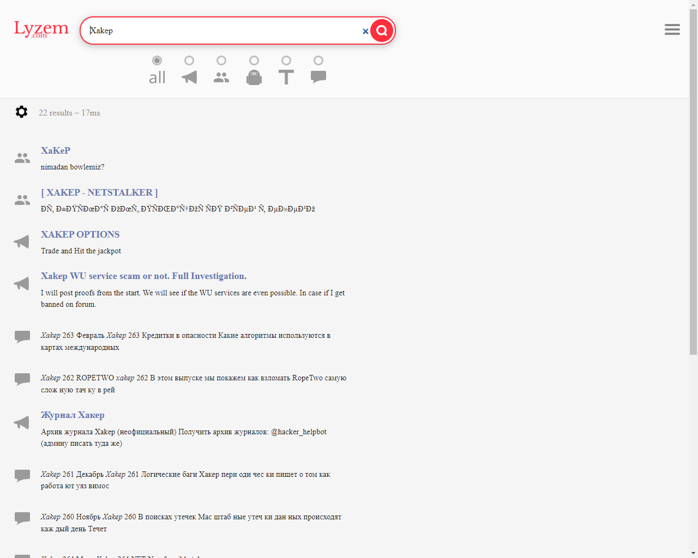
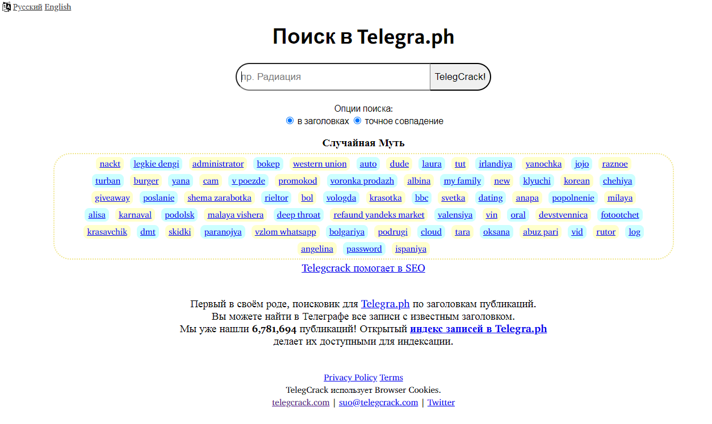
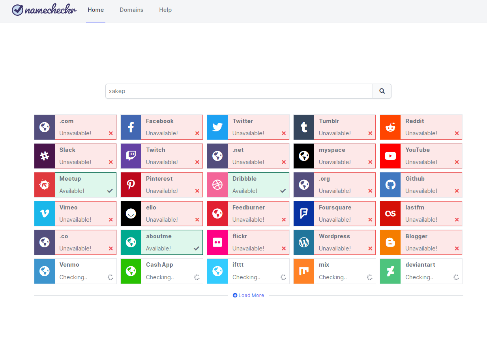
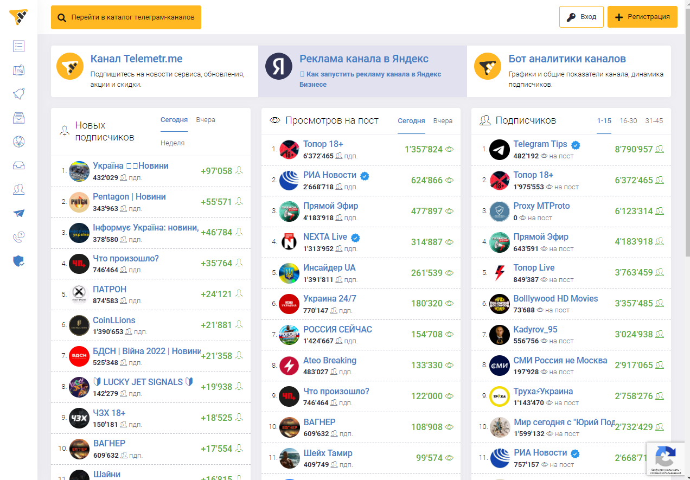
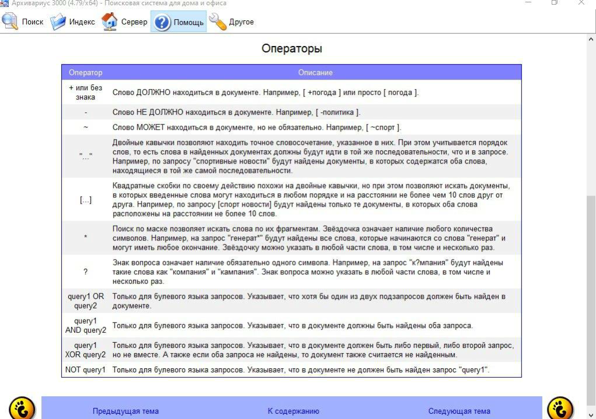

0x42
Форумчанин
- Регистрация
- 05.05.2025
- Сообщения
- 198
- Реакции
- 137
Если в интернете кто‑то не прав, у тебя есть ровно два варианта.
Первый — понять и забить, второй — найти обидчика и аккуратно начистить ему интерфейс.
Но для начала этого самого обидчика нужно как минимум вычислить и по возможности деанонимизировать.
О том, как это сделать в «Телеграме», мы расскажем в сегодняшней статье.
Статья с хакера (Приватка):Это он, деанон! Пробиваем пользователей Telegram по открытым источникам
Несмотря на то что «Телеграм» считается безопасным и защищенным мессенджером, при желании в его недрах и глубинах можно отыскать большой объем информации о пользователях. А если подключить к поиску методы OSINT, то есть разведки по открытым источникам, сведений можно собрать еще больше.
На помощь нам придут специально обученные телеграм‑боты, поисковые системы и, конечно же, русская народная смекалка.)
ВАЖНО:
Сбор информации о частной жизни граждан без их согласия незаконен, помни об этом. В этой статье рассказывается о поиске в открытых источниках данных, которые люди оставляют в публичном доступе сами. Но в любом случае нужно соблюдать требования законодательства и уважать право граждан на сохранение их приватности. Поэтому информация в статье предоставлена исключительно в ознакомительных целях. Авторы и редакция не несут ответственности за любой возможный вред, причиненный использованием материалов этой публикации.
[POSTS=2]
Любой поиск нужно с чего‑то начинать. Пользователь «Телеграма» может, если захочет, сменить ник, имя и прочие данные своего аккаунта. Кроме одного: ID, или индивидуального идентификатора, который присваивается учетке при регистрации и впоследствии остается неизменным.
Поэтому именно его всегда используют в тех случаях, когда нужно указать на аккаунт максимально точно, он же однозначно идентифицирует юзера в базах данных.
Вот этот ID интересующего нас персонажа и следует вычислить в первую очередь.
ИДЕНТИФИКАТОР И ОСНОВНЫЕ ДАННЫЕ
Проще всего это сделать с помощью бесплатного бота @username_to_id_bot. Пользоваться им до безобразия просто: отдав команду /start, отправь боту юзернейм, идентификатор которого ты желаешь узнать, скопипасти ссылку‑приглашение для чата или форвардни сообщение от интересующего тебя пользователя.Существует еще частично платный бот @CheckID_AIDbot, который делает все то же самое, что бесплатный, но за деньги (и при этом еще безжалостно спамит рекламой).
Зачем он нужен — непонятно, наверное, бот предназначен для тех, кто любит покупать по подписке то, что можно получить на халяву. Еще имеется специальное вложение‑скрипт, которое можно, например, запульнуть в чат: этот скрипт позволит собрать идентификаторы участников дискуссии.
Если ты хочешь узнать способы сбора имен участников чатов в «Телеграме», обязательно прочитай статью «Парсим телегу. Как собирать имена участников чатов в Telegram».
Или с форума: Заметка - Парсинг телеги
Теперь можно попытаться отыскать полезную информацию, связанную с полученным нами ID. Начать можно с высокотехнологичной процедуры, известной в узких хакерских кругах под названием «гуглеж».
Действительно, в индексе поисковых систем вполне могут встретиться данные из каких‑нибудь утечек или публичных баз — для этого в качестве запроса следует указать ID юзера «Телеграма» в кавычках.
Если в «Гугле» и «Яндексе» не нашлось ничего полезного, к нашим услугам имеются многочисленные боты, большинство которых, правда, предоставляет информацию на платной основе:
- «Глаз Бога» — платный OSINT-бот, о котором «Хакер» уже писал. Бота регулярно банят, поэтому он меняет свое название — актуальную версию можно найти на его официальном сайте;
- @helper_inform_bot — боту можно скормить запрос вида @XXXXXXX (где XXXXXXX — ID пользователя Telegram), в ответ он выдаст фоточки из профиля, имя юзера, никнейм и, если он привязан к профилю, номер телефона и наименование оператора. Также можно искать информацию по имени, адресу электронной почты, ИНН и другим параметрам;
- @QuickOSINT_bot — еще один бот из нашей предыдущей подборки, помимо ID, он способен искать по телефону, email, госномеру или VIN автомобиля, номеру паспорта, СНИЛС или ИНН;
- @UsersSearchBot — платный бот со схожими возможностями, позволяет бесплатно выполнить несколько запросов, чего в большинстве случаев более чем достаточно;
- @Zernerda_bot) — кроме поиска в Telegram может искать и по номеру телефона, автомобиля, ФИО, учеткам «Вконтакте», «Одноклассникам», в Twitter, Instagram, Facebook, по e-mail, паспортным данным, ИНН, IP-адресу, User-Agent и в приватных базах. Бесплатно ищет пользователей, имеющихся всписке друзей и знакомых с родственниками в VK и «Одноклассниках». В отличие от других ботов умеет определять дату создания набора стикеров или эмодзи.
На следующем этапе можно попытаться найти что‑нибудь интересное с использованием специализированных поисковых систем вроде lyzem.com — это поисковик по открытым чатам, каналам, ботам Telegram и сайту telegra.ph.

Результаты поиска, прямо скажем, получаются не слишком релевантными, но что‑то интересное с помощью этого сервиса найти можно. А вот еще три использующих технологии Google поисковика по «Телеграму», которые тоже могут оказаться небесполезны:
Ну и не следует забывать о поисковике telegcrack.com, который ищет по заголовкам публикаций на сайте Telegra.ph. Этот инструмент больше полезен для сеошников, чем для исследователей вроде нас, но пренебрегать им все‑таки не стоит.

ПОИСК ПО НИКУ
Переходим к- @maigret_osint_bot — этот бот использует базу, состоящую из более чем 3000 сайтов;
- @SovaAppBot — бесплатный бот для поиска информации из открытых источников по никнейму, email, в социальной сети «Вконтакте» и на других площадках;
- NaMeCheck — сайт, проверяющий введенное имя или ник более чем по 90 сайтам и 30 доменным зонам;
- Instantusername — позволяет проверить, занято ли указанное имя в популярных социальных сетях, на имиджбордах и других публичных сервисах. Затем можно просмотреть занятые учетки на каждом из этих сайтов вручную;
- NameCheckUp — аналог предыдущего сервиса: соцсетей здесь меньше, зато предлагается проверка по международным доменам (можно заодно зарегистрировать парочку свободных);
- Namecheckr — еще один сервис, подобный двум предыдущим;
- SangMataInfo — бот, позволяющий отследить историю форвардинга любого сообщения в «Телеграме». Если форварднуть ему сообщение, он покажет список пользователей, пересылавших его до этого друг другу.

Имеет смысл поискать имя пользователя в сервисах для администраторов телеграм‑каналов и специалистов по рекламе. Здесь иногда встречаются упоминания человека, его юзернейма и ID. Также эти инструменты полезны при исследовании каналов и поиске их владельца:
- telegramdb.org — база данных по телеграм‑каналам, содержит сводную информацию о них и общую статистику;
- telemetr.me — еще один каталог телеграм‑каналов для рекламщиков, он может оказаться полезен при поиске владельцев канала;
- tgstat.ru — сводная статистика и аналитика популярности и посещаемости каналов.

Есть одна интересная особенность и у блог‑платформы «Яндекс Дзен»: она позволяет владельцам телеграм‑каналов автоматически настроить репост своих публикаций. Нам же это, в свою очередь, дает возможность отыскать блог автора какого‑нибудь анонимного телеграм‑канала и выяснить его ник. Для этого нужно скопировать текст поста из телеги и, заключив его в кавычки, погуглить. Ник будет отображаться в самой ссылке: https://dzen.ru/username. Если обнаруженный поиском блог дублирует все посты из интересующего нас телеграм‑канала, вполне вероятно, что автор у них один и тот же. Описание странички в «Дзене» может также содержать аватарку автора, его имя и иные полезные сведения.
Если тебе кажется, что ты нашел несколько аккаунтов юзера в «Телеграме», но не уверен, что все они принадлежат ему, или ты подозреваешь, что он является админом какого‑либо канала, можно помониторить изменение онлайн‑статуса этого человека с помощью специального инструмента под названием TelegramOnlineSpy. Тулза позволяет отследить время захода пользователя в сеть с нескольких аккаунтов, сопоставить его и сделать соответствующие выводы.
Ну и напоследок не помешает поискать информацию по нику пользователя в альтернативных поисковиках, список которых ты можешь найти вот в этом посте. Как говорится, полезной информации много не бывает.
ВЫЯВЛЯЕМ ИНТЕРЕСЫ
Понимание того, чем интересуется тот или иной человек, позволит составить более целостную картину его личности. Один из способов выяснить круг его интересов — собрать список чатов, в которых этот юзер состоит. Кроме того, в чатах и группах можно отыскать сообщения пользователя и выяснить о нем что‑нибудь любопытное. Вот два бота, позволяющие решить эту задачу:Вступив в группу, в которой состоит интересующий нас пользователь, можно выгрузить историю сообщений с помощью функции «Экспорт истории чата» (она доступна в десктопной версии «Телеграма»). Для анализа этой истории лучше всего использовать программу «Архивариус 3000», которая позволяет выискивать в переписке такие сущности, как номер телефона, адреса электронной почты, URL, IP-адреса, а также считать частоту их использования. Весьма полезная вещь, которая нередко помогает находить забытые авторами сообщений ссылки на свои блоги и личные кабинеты, давно потертые контакты и страницы в социальных сетях.

КНИГА ЛИЦ
Если тебе удалось раздобыть аватарку или портрет интересующего тебя персонажа, имеет смысл поискать человека с этой фотографии (или похожего на него) в социальных сетях и различных пабликах. Еще можно составить список юзеров, использующих одну и ту же аватарку на разных сайтах, — возможно, несколько таких учетных записей принадлежат одному и тому же пользователю. Вот инструменты, которые помогут тебе решить эту задачу:- FaceCheck — служба поиска по фото в зарубежных соцсетях;
- Search4faces — то же самое, но по «Вконтакте» и «Одноклассникам»;
- Pimeyes — качественный, но платный поиск по картинкам (в телеграм‑боте этого сервиса можно выполнить три бесплатных поиска);
- ImageSearch.org — бесплатный поиск похожих картинок в интернете;
- Tineye.com — этот сервис в представлениях не нуждается;
- Reverse Image Search — аналог Tineye;
- Karmadecay — поиск похожих изображений в Reddit.
ВЫВОДЫ
Представленный в этой статье список инструментов, безусловно, далеко не исчерпывающий, но он может оказаться крайне полезным в качестве отправной точки. Если ты регулярно пользуешься какими‑то другими сервисами для поиска информации о пользователях телеги, не забудь поделиться ссылками в комментариях.[/POSTS]
Последнее редактирование: